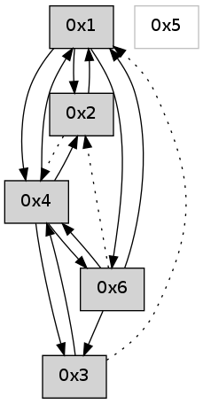

>> << IDX [start] -100 -25 -5 +0 +5 +25 +100 [555.247631073]
 Previous packets
----------------------------------------------------------------------
550.326557 beacon01(adaf) #0 coord=01,02,05,03,04,06 cycle=432.0ms assoc
-- color-indic=0 64 28 f5
550.336518 beacon02(adaf) #0 coord=01,02,05,03,04,06 cycle=432.0ms assoc 64 79 0a
550.346517 beacon05(adaf) #0 coord=01,02,05,03,04,06 cycle=432.0ms assoc 64 df 20
550.356518 beacon03(adaf) #0 coord=01,02,05,03,04,06 cycle=432.0ms assoc 64 43 04
550.366519 beacon04(adaf) #0 coord=01,02,05,03,04,06 cycle=432.0ms assoc 64 e5 2e
550.376518 beacon06(adaf) #0 coord=01,02,05,03,04,06 cycle=432.0ms assoc 64 91 32
550.388194 [Hello(4): seq=350 sym=6,3,1 sysInfo= stat=6:3,0,0,0/3:10,0,0,0/1:6,0,0,0]
550.393211 [Hello(1): seq=249 sym=2,6,4 sysInfo= stat=2:11,0,0,0/6:1,0,0,0/4:10,0,0,0]
----------------------------------------------------------------------
550.818664 beacon01(adaf) #0 coord=01,02,05,03,04,06 cycle=432.0ms assoc
-- color-indic=0 64 ec 9a
550.828624 beacon02(adaf) #0 coord=01,02,05,03,04,06 cycle=432.0ms assoc 64 bd 65
550.838625 beacon05(adaf) #0 coord=01,02,05,03,04,06 cycle=432.0ms assoc 64 1b 4f
550.848625 beacon03(adaf) #0 coord=01,02,05,03,04,06 cycle=432.0ms assoc 64 87 6b
550.858626 beacon04(adaf) #0 coord=01,02,05,03,04,06 cycle=432.0ms assoc 64 21 41
550.868628 beacon06(adaf) #0 coord=01,02,05,03,04,06 cycle=432.0ms assoc 64 55 5d
----------------------------------------------------------------------
551.310772 beacon01(adaf) #0 coord=01,02,05,03,04,06 cycle=432.0ms assoc
-- color-indic=0 64 a1 9d
551.320733 beacon02(adaf) #0 coord=01,02,05,03,04,06 cycle=432.0ms assoc 64 f0 62
551.330733 beacon05(adaf) #0 coord=01,02,05,03,04,06 cycle=432.0ms assoc 64 56 48
551.340733 beacon03(adaf) #0 coord=01,02,05,03,04,06 cycle=432.0ms assoc 64 ca 6c
551.350735 beacon04(adaf) #0 coord=01,02,05,03,04,06 cycle=432.0ms assoc 64 6c 46
551.360733 beacon06(adaf) #0 coord=01,02,05,03,04,06 cycle=432.0ms assoc 64 18 5a
551.372172 [Hello(1): seq=250 sym=2,6,4 sysInfo= stat=2:11,0,0,0/6:1,0,0,0/4:10,0,0,0]
551.376064 [Hello(4): seq=351 sym=6,3,1 sysInfo= stat=6:3,0,0,0/3:11,0,0,0/1:7,0,0,0]
----------------------------------------------------------------------
551.802879 beacon01(adaf) #0 coord=01,02,05,03,04,06 cycle=432.0ms assoc
-- color-indic=0 64 65 f2
551.812840 beacon02(adaf) #0 coord=01,02,05,03,04,06 cycle=432.0ms assoc 64 34 0d
551.822840 beacon05(adaf) #0 coord=01,02,05,03,04,06 cycle=432.0ms assoc 64 92 27
551.832840 beacon03(adaf) #0 coord=01,02,05,03,04,06 cycle=432.0ms assoc 64 0e 03
551.842840 beacon04(adaf) #0 coord=01,02,05,03,04,06 cycle=432.0ms assoc 64 a8 29
551.852841 beacon06(adaf) #0 coord=01,02,05,03,04,06 cycle=432.0ms assoc 64 dc 35
----------------------------------------------------------------------
552.294987 beacon01(adaf) #0 coord=01,02,05,03,04,06 cycle=432.0ms assoc
-- color-indic=0 64 29 42
552.304947 beacon02(adaf) #0 coord=01,02,05,03,04,06 cycle=432.0ms assoc 64 78 bd
552.314947 beacon05(adaf) #0 coord=01,02,05,03,04,06 cycle=432.0ms assoc 64 de 97
552.324949 beacon03(adaf) #0 coord=01,02,05,03,04,06 cycle=432.0ms assoc 64 42 b3
552.334949 beacon04(adaf) #0 coord=01,02,05,03,04,06 cycle=432.0ms assoc 64 e4 99
552.344950 beacon06(adaf) #0 coord=01,02,05,03,04,06 cycle=432.0ms assoc 64 90 85
552.356612 [Hello(4): seq=352 sym=6,3,1 sysInfo= stat=6:3,0,0,0/3:12,0,0,0/1:7,0,0,0]
552.360346 [Hello(1): seq=251 sym=2,6,4 sysInfo= stat=2:11,0,0,0/6:1,0,0,0/4:11,0,0,0]
----------------------------------------------------------------------
552.787094 beacon01(adaf) #0 coord=01,02,05,03,04,06 cycle=432.0ms assoc
-- color-indic=0 64 ed 2d
552.797056 beacon02(adaf) #0 coord=01,02,05,03,04,06 cycle=432.0ms assoc 64 bc d2
552.807054 beacon05(adaf) #0 coord=01,02,05,03,04,06 cycle=432.0ms assoc 64 1a f8
552.817055 beacon03(adaf) #0 coord=01,02,05,03,04,06 cycle=432.0ms assoc 64 86 dc
552.827055 beacon04(adaf) #0 coord=01,02,05,03,04,06 cycle=432.0ms assoc 64 20 f6
552.837055 beacon06(adaf) #0 coord=01,02,05,03,04,06 cycle=432.0ms assoc 64 54 ea
552.848741 [Hello(3): seq=352 sym=4 asym=1 sysInfo= stat=4:0,0,0,0/1:6,0,0,0]
552.852405 [Hello(2): seq=847 sym=1 asym=4 sysInfo= stat=1:1,0,0,0/4:7,0,0,0]
----------------------------------------------------------------------
553.279201 beacon01(adaf) #0 coord=01,02,05,03,04,06 cycle=432.0ms assoc
-- color-indic=0 64 63 38
553.289162 beacon02(adaf) #0 coord=01,02,05,03,04,06 cycle=432.0ms assoc 64 32 c7
553.299162 beacon05(adaf) #0 coord=01,02,05,03,04,06 cycle=432.0ms assoc 64 94 ed
553.309163 beacon03(adaf) #0 coord=01,02,05,03,04,06 cycle=432.0ms assoc 64 08 c9
553.319164 beacon04(adaf) #0 coord=01,02,05,03,04,06 cycle=432.0ms assoc 64 ae e3
553.329163 beacon06(adaf) #0 coord=01,02,05,03,04,06 cycle=432.0ms assoc 64 da ff
553.340842 [Hello(4): seq=353 sym=6,3,1,2 sysInfo= stat=6:3,0,0,0/3:12,0,0,0/1:8,0,0,0/2:0,0,0,0]
553.349518 [Hello(1): seq=252 sym=2,6,4 sysInfo= stat=2:12,0,0,0/6:2,0,0,0/4:11,0,0,0]
----------------------------------------------------------------------
553.771309 beacon01(adaf) #0 coord=01,02,05,03,04,06 cycle=432.0ms assoc
-- color-indic=0 64 a7 57
553.781269 beacon02(adaf) #0 coord=01,02,05,03,04,06 cycle=432.0ms assoc 64 f6 a8
553.791271 beacon05(adaf) #0 coord=01,02,05,03,04,06 cycle=432.0ms assoc 64 50 82
553.801271 beacon03(adaf) #0 coord=01,02,05,03,04,06 cycle=432.0ms assoc 64 cc a6
553.811271 beacon04(adaf) #0 coord=01,02,05,03,04,06 cycle=432.0ms assoc 64 6a 8c
553.821271 beacon06(adaf) #0 coord=01,02,05,03,04,06 cycle=432.0ms assoc 64 1e 90
----------------------------------------------------------------------
554.263416 beacon01(adaf) #0 coord=01,02,05,03,04,06 cycle=432.0ms assoc
-- color-indic=0 64 eb e7
554.273377 beacon02(adaf) #0 coord=01,02,05,03,04,06 cycle=432.0ms assoc 64 ba 18
554.283378 beacon05(adaf) #0 coord=01,02,05,03,04,06 cycle=432.0ms assoc 64 1c 32
554.293379 beacon03(adaf) #0 coord=01,02,05,03,04,06 cycle=432.0ms assoc 64 80 16
554.303378 beacon04(adaf) #0 coord=01,02,05,03,04,06 cycle=432.0ms assoc 64 26 3c
554.313379 beacon06(adaf) #0 coord=01,02,05,03,04,06 cycle=432.0ms assoc 64 52 20
554.325055 [Hello(4): seq=354 sym=6,3,1,2 sysInfo= stat=6:3,0,0,0/3:12,0,0,0/1:9,0,0,0/2:0,0,0,0]
554.330686 [Hello(1): seq=253 sym=2,6,4 sysInfo= stat=2:13,0,0,0/6:2,0,0,0/4:11,0,0,0]
----------------------------------------------------------------------
554.755524 beacon01(adaf) #0 coord=01,02,05,03,04,06 cycle=432.0ms assoc
-- color-indic=0 64 2f 88
554.765486 beacon02(adaf) #0 coord=01,02,05,03,04,06 cycle=432.0ms assoc 64 7e 77
554.775485 beacon05(adaf) #0 coord=01,02,05,03,04,06 cycle=432.0ms assoc 64 d8 5d
554.785485 beacon03(adaf) #0 coord=01,02,05,03,04,06 cycle=432.0ms assoc 64 44 79
554.795486 beacon04(adaf) #0 coord=01,02,05,03,04,06 cycle=432.0ms assoc 64 e2 53
554.805486 beacon06(adaf) #0 coord=01,02,05,03,04,06 cycle=432.0ms assoc 64 96 4f
554.820849 [Hello(6): seq=269 sym=3,4,1 asym=2 sysInfo= stat=3:0,0,0,0/4:10,0,0,0/1:11,0,0,0/2:0,0,0,0]